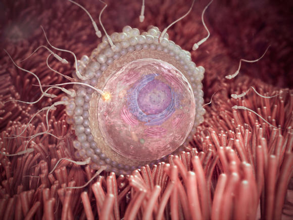

First Trimester
Weeks 2-13
**Tap each image for more information**
Fertilisation: At the start of this week, you ovulate. Your egg is fertilized 12 to 24 hours later if a sperm penetrates it and this simple biological occurrence begins a series of increasingly complicated processes that leads to a new human life, if all goes well. Over the next several days, the fertilized egg will start dividing into multiple cells as it travels down the fallopian tube, enters your uterus, and starts to burrow into the uterine lining.
Implantation: Now nestled in the nutrient-rich lining of your uterus is a microscopic ball of hundreds of rapidly multiplying cells that will develop into your baby. This ball, called a blastocyst, has begun to produce the pregnancy hormone hCG, which tells your ovaries to stop releasing eggs.
Your ball of cells is now officially an embryo. You're now about 4 weeks from the beginning of your last period. It's around this time when your next period would normally be due, that you might be able to get a positive result on a home pregnancy test. Your baby is the size of a poppy seed.
Your baby resembles a tadpole more than a human, but is growing fast. The circulatory system is beginning to form, and the tiny heart will start to beat this week. Your baby is the size of a sesame seed.
Your baby's nose, mouth and ears are starting to take shape, and the intestines and brain are beginning to develop. Your baby is the size of a lentil.
Your baby has doubled in size since last week, but still has a tail, which will soon disappear. Little hands and feet that look more like paddles are emerging from the developing arms and legs. Your baby is the size of a blueberry.
Your baby has started moving around, though you won't feel movement yet. Nerve cells are branching out, forming primitive neural pathways. Breathing tubes now extend from his throat to his developing lungs. Your baby is the size of a kidney bean.
Your baby's basic physiology is in place (she even has tiny earlobes), but there's much more to come. Her embryonic tail has disappeared. She weighs just a fraction of an ounce but is about to start gaining weight fast. Your baby is the size of a grape.
Your embryo has completed the most critical portion of development. His skin is still translucent, but his tiny limbs can bend and fine details like nails are starting to form. Your baby is the size of a kumquat.
Your baby is almost fully formed. She's kicking, stretching, and even hiccupping as her diaphragm develops, although you can't feel any activity yet. Your baby is the size of a fig.
This week your baby's reflexes kick in: His fingers will soon begin to open and close, toes will curl, and his mouth will make sucking movements. He'll feel it if you gently poke your tummy though you won't feel his movements yet. Your baby is the size of a lime.
This is the last week of your first trimester. Your baby's tiny fingers now have fingerprints, and her veins and organs are clearly visible through her skin. If you're having a girl, her ovaries contain more than 2 million eggs. Your baby is the size of a pea pod.